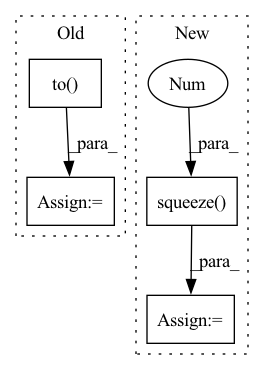

Pattern ID :24737

Before Change
aux_in = torch.empty((global_graph_out.size()[0],
self.polyline_vec_shape)
).to(self.device)
aux_gt = torch.empty((global_graph_out.size()[0],
self.polyline_vec_shape)
).to(self.device)
for i, idx in enumerate(mask_polyline_indices):
aux_in[i] = global_graph_out[i, idx].squeeze(0)
aux_gt[i] = x[i, idx].squeeze(0)
aux_out = self.aux_mlp(aux_in)
After Change
return pred, aux_out, aux_gt
else:
global_graph_out = self.global_graph(x, valid_lens)
pred = self.traj_pred_mlp(global_graph_out[:, [0]].squeeze(1))
return pred, None, None
In pattern: SUPERPATTERN
Frequency: 4
Non-data size: 4
Instances
Fragment ID: 76605414
Project Name: henry1iu/tnt-trajectory-predition
Commit Name: d5edc8d904cf69f92ff3c5f3acdfeb64c820ccca
Time: 2021-01-21
Author: jb@LIUs-MacBook-Pro.local
File Name: core/model/vectornet.py
M Class Name: OriginalVectorNet
N Class Name: OriginalVectorNet
M Method Name: forward(2)
N Method Name: forward(2)
M Parent Class: nn.Module
N Parent Class: nn.Module
M File Name: core/model/vectornet.py
N File Name: core/model/vectornet.py
M Start Line: 213
M End Line: 242
N Start Line: 205
N End Line: 237
'>
Before Change
tgt_in = torch.zeros(btz,1, dtype=torch.long).fill_(self.sos_id).to(device)
for step in range(self.max_len):
//tgt_mask = target_mask(tgt_in, ignore_id=self.pad_id).to(tgt.device).unsqueeze(-3)
tgt_mask = subsequent_mask(step+1).to(tgt.device).unsqueeze(0)
preds = self.decoder(tgt_in, tgt_mask, enc_out, enc_mask)
//preds[:,step,:] = pred.squeeze(-2)
y_hat = preds.max(-1)[1]
//print(y_hat)
//print(y_hat)
tgt_in = torch.cat((tgt_in,y_hat[:,step].unsqueeze(1)), dim=1)
//y_hats[:,step] = y_hat.squeeze(dim=-1)
//y_hats[:,step] = y_hat[:,step]
y_hats = tgt_in[:,1:]
if tgt is None:
for testing
golds = None
After Change
//tgt_mask = subsequent_mask(step+1).to(tgt.device).unsqueeze(0)
tgt_mask = None
pred = self.decoder(tgt_in, tgt_mask, enc_out, enc_mask)
preds[:,step,:] = pred.squeeze(-2)
y_hat = pred.max(-1)[1]
//print(y_hat)
tgt_in = y_hat
//tgt_in = torch.cat((tgt_in,y_hat[:,step].unsqueeze(1)), dim=1)
'>
Fragment ID: 76605415
Project Name: qute012/kosr
Commit Name: e19438c9d4d6bd6af0fa84e9fd93a20e2cf2f828
Time: 2021-02-03
Author: ejrwls012@gmail.com
File Name: kosr/model/transformer/model.py
M Class Name: Transformer
N Class Name: Transformer
M Method Name: greedy_search(4)
N Method Name: greedy_search(4)
M Parent Class: nn.Module
N Parent Class: nn.Module
M File Name: kosr/model/transformer/model.py
N File Name: kosr/model/transformer/model.py
M Start Line: 86
M End Line: 98
N Start Line: 85
N End Line: 99
'>
Before Change
if self._use_dB_normalization:
audio_segment.normalize(target_db=self._target_dB)
// 获取音频特征
samples = audio_segment.to("int16")
waveform = torch.from_numpy(np.expand_dims(samples, 0)).float()
if self._feature_method == "spectrogram":
// 计算声谱图
feature = spectrogram(waveform=waveform,
After Change
audio_segment.normalize(target_db=self._target_dB)
// 获取音频特征
waveform = torch.from_numpy(np.expand_dims(audio_segment.samples, 0)).float()
feature = self.feat_fun(waveform).squeeze(0).transpose(1, 0).numpy()
// 归一化
mean = np.mean(feature, 1, keepdims=True)
std = np.std(feature, 1, keepdims=True)
'>
Fragment ID: 76605416
Project Name: yeyupiaoling/audioclassification-pytorch
Commit Name: f9a39f29e647cb3c02b8bb832a8d66c8655e4b1e
Time: 2022-12-06
Author: yeyupiaoling@foxmail.com
File Name: macls/data_utils/featurizer/audio_featurizer.py
M Class Name: AudioFeaturizer
N Class Name: AudioFeaturizer
M Method Name: featurize(2)
N Method Name: featurize(2)
M Parent Class: object
N Parent Class: object
M File Name: macls/data_utils/featurizer/audio_featurizer.py
N File Name: macls/data_utils/featurizer/audio_featurizer.py
M Start Line: 48
M End Line: 66
N Start Line: 57
N End Line: 58